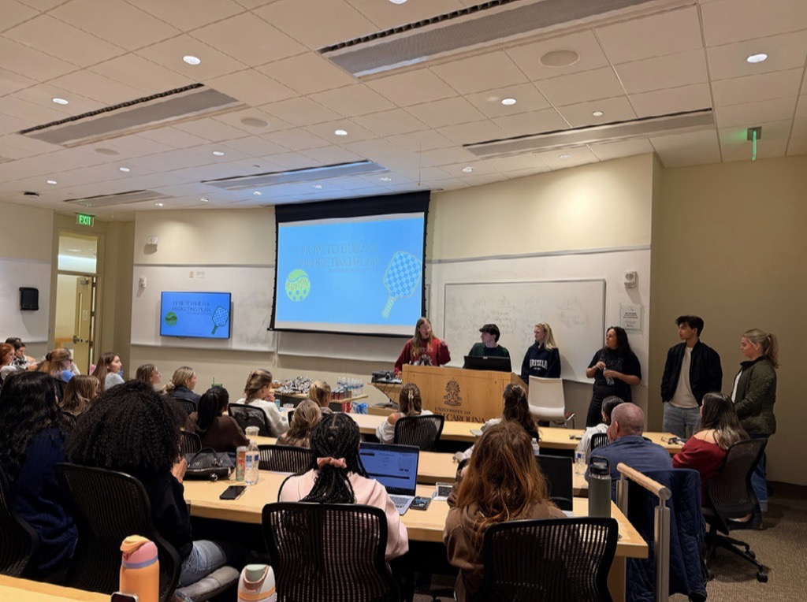

Networking & Professional Development
I make learning from others and expanding my professional network a top priority.
To put this priority into action, I frequently attended speaker sessions hosted by the University of South Carolina, where I connect with business leaders such as CMO Tina Emerson of Maynard Nexsen and COO Brad Fultz of Blanchard Machinery.
Following my recent transfer to Rutgers University, I am excited to get involved in the marketing club as well as build connections with individuals in my intended field.
Beyond campus, I consistently make an effort to build meaningful connections: from professors and peers to professionals I meet through work. A coffee chat with a UofSC alum in risk management offered a valuable career perspective and reinforced a core belief of mine:
Strong relationships often begin with a simple introduction.
